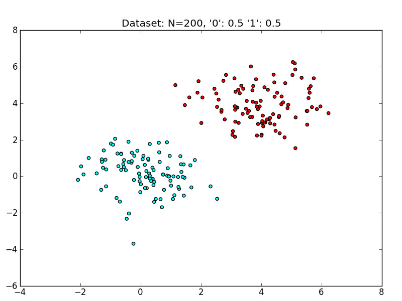
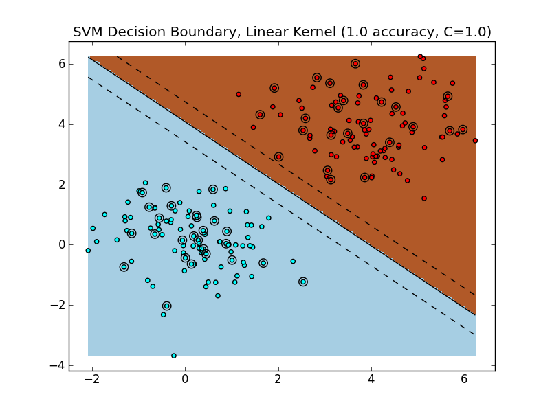
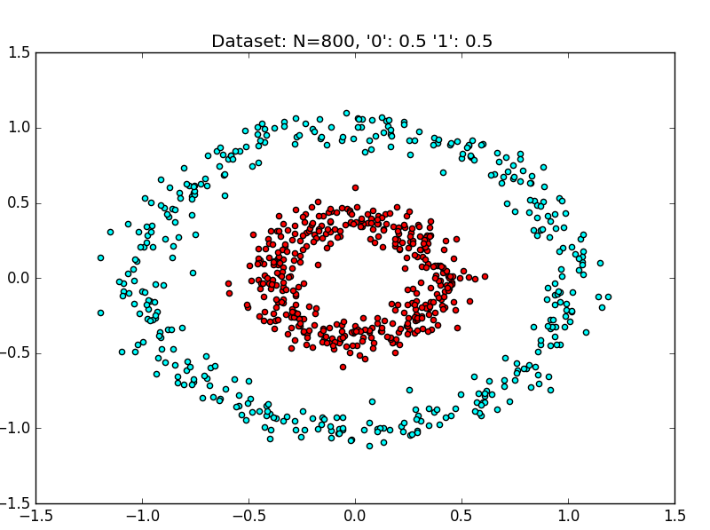
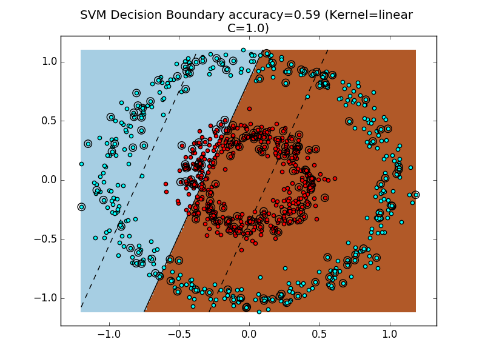
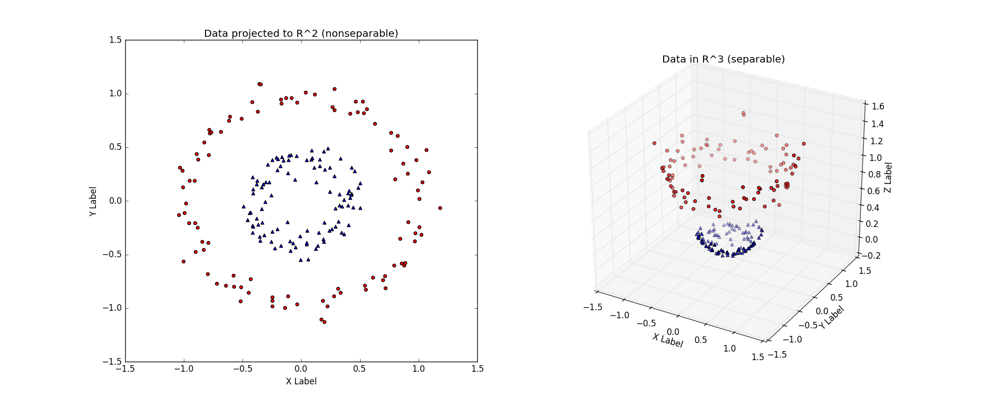
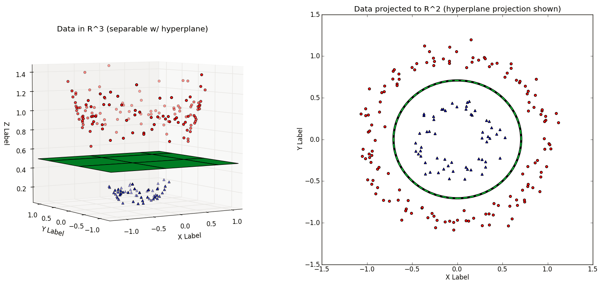

Kernel Based Methods
Posted on Sat 21 January 2017 in Learning
KERNEL?
Do Read : http://www.eric-kim.net/eric-kim-net/posts/1/kernel_trick.html
A Kernel Function \(K(\vec{v},\vec{w})\) is a function \(K:\Re^N \times \Re^N \rightarrow \Re\) that obeys certain mathematical properties.
For an intermediate definition, think of the kernel function as one that computes a dot product between \(\vec{v}, \vec{w}\).
Linear SVM, Binary Classification
Suppose that we have a 2-class dataset \(D\), and wewish to train a classifier \(C\) to predict the class labels of future data points. This is known as binary classification problem, and can be cast as Yes/No questions such as :
-
Medicine :
Given a patient's vital data, does the patient have a cold?
-
Computer Vision :
Does the image contain a person?
A popular off-the-shelf classifier is the Support Vector Machine (SVM), so we will use this as our classification algorithm.
Binary vs. Multiclass Classification
Binary classifiers are often the focus due to their simpler presentation.
However, many problems inherently have more than 2 possible outcomes.
For instance,
To train a face verification system that can detect the identity of a photograph from a pool of \(N\) people (where $N \gt 2 $).
This sort of problem is known as a Multiclass classification problem.
Most mathematical definitions are binary classifiers.
There are 2 main approaches to the Multiclass problem :
- Directly add a multiclass extension to a binary classifier.
- Pros: Provides a principled way of solving the muticlass problem.
-
Cons : Multiclass extensions tend to be much more complicated than the original binary formulation. This may lead to significantly longer training and test procedures. Even worse, experimental results may not be that much better than ad-hoc methods like (2).
-
Combine multiple binary classifiers to create a 'mega' multi-multiclass classifier. 2 popular implementations of this idea are the
"One-versus-One" (OVO)and"One-versus-All" (OVA)scheme. -
Pros : Simple idea, easy to implement, can be much faster than multiclass extensions. Some people suggest that empirical results tend to be on par with (1).
- Cons : Ultimately, it is an ad-hoc method for solving the multiclass problem - there may exist datasets for which OVO?OVA will perform poorly on, but general multiclass classifiers (1) perform well on.
Recall that a Linear SVM finds a hyperplane \(\vec{w}\) that best separates the data points in the training set by class label.
\(\vec{w}\) is called the decision boundary, and cuts the space into 2 halves : one half for class '0', and the other half for class '1'.
To classify a point \(x_i \epsilon X\) (where \(X\) is the dataset), we simply see which 'side' of \(\vec{w}\) that \(x_i\) lies.
Note: This description only applies to binary classification problems.
A sample dataset :

Training and evaluating a linear SVM on this dataset yields the following decision boundary. 
Because the data is easily linearly separable, the SVM is able to find a margin that perfectly separates the training data, which also generalizes very well to the test set. The hyperplane (a line in ) separates the space into two halves: points that live in the brownish region are classified as class '1', whereas points that live in the blueish region are classified as class '0'.
Unfortunately, in practice we will not always encounter such well-behaved datasets.
Let's take a look at a dataset that is not linearly separable.
A Linearly Nonseparable Dataset

The above dataset is a synthetically generated dataset.
==== Evaluating Random Classifier
== Accuracy: 0.45
precision recall f1-score support
0 0.74 0.42 0.53 151
1 0.23 0.55 0.33 49
avg / total 0.62 0.45 0.48 200
==== Finished Random Classifier (0.000 s)
==== Evaluating SVM (kernel='linear'), 2-fold cross validation
Parameters to be chosen through cross validation:
C: [1.0, 10.0, 100.0, 1000.0, 10000.0]
== Best Params: {'kernel': 'linear', 'C': 1.0}
== Best Score: 0.476666666667
== Accuracy: 0.445
precision recall f1-score support
0 0.78 0.37 0.50 151
1 0.26 0.67 0.37 49
avg / total 0.65 0.45 0.47 200
==== Finished Linear SVM (1.290 s)

As we can see, the RandomClassifier and Linear SVM both perform poorly. It's always a bummer when our classifier is as bad as random guessing!
To get a geometric sense of the SVM's failure to cope with this dataset, see the above figure for the decision boundary.
Dealing with Nonseparable Data
Obviously, we would like to handle linearly nonseparable data - otherwise, SVMs wouldn't be very useful.
In the SVM example, the primary obstacle is the constraint that the decision boundary be linear in the original feature space (here,\(\Re^2\) ).
However, this is not always the correct decision boundary to find. For instance, in Figure 4, a better decision boundary would be a circular decision boundary that separates the outer cyan ring from the inner red ring.
Could we generalize the SVM formulation to explicitly discover decision boundaries with arbitrary shape?
As it turns out, if you get into the nitty-gritty mathematical details of the SVM, the derivations assume that the decision boundary is a separating hyperplane \(\vec{w}\).
-
I imagine there is a way to recast the SVM optimization problem such that a more-general decision surface can be found, but I'd bet that the resulting optimization would carry a significant computational burden when compared to the linear SVM formulation.
-
So, it appears that we are stuck with an SVM that, for an N-dimensional dataset, finds an (N-1)-dimensional separating hyperplane.
What if we could play with N...?
IDEA !
Separable in a higher dimension

Let's think outside the box for a moment.
Consider the linearly nonseparable dataset in the above figure (left), with its two concentric rings.
Imagine that this dataset is merely a 2-D version of the 'true' dataset that lives in \(\Re^3\), the above figure (right).
The \(\Re^3\) dataset is easily linearly separable by a hyperplane. Thus, provided that we work in this \(\Re^3\) space, we can train a linear SVM classifier that successfully finds a good decision boundary.
However, we are given the dataset in \(\Re^2\).
The challenge is to find a transformation \(T:\Re^2\) -> \(\Re^3\), such that the transformed dataset is linearly separable in \(\Re^3\).
In the above figure, the \(T\) used is :
which after applied to every point on the left, yields the linearly separable dateset on the right.
Note : It is a convention to use the Greek letter 'phi' \(\phi\) for this transformation, so \(\phi\) will be used from hereon.
Assuming we have such a transformation \(\phi\), the new classification pipeline is as follows.
First transform the training set \(X\) to \(X'\) with \(\phi\). Train a linear SVM on \(X'\) to get classifier \(f_{svm}\). At test time, a new example \(\vec{x}\) will first be transformed to \(\vec{x'}=\phi(\vec{x})\). The output class label is then determined by :\(f_{svm}(\vec{x'})\)
Observation : This is exactly the same as the train/test procedure for regular linear SVMs, but with an added data transformation via \(\phi\).
In the next figure, note that the hyperplane learned in \(\Re^3\) is non-linear when projected back to \(\Re^2\). Thus, we have improved the expressiveness of the Linear SVM classifier by working in a higher-dimnensional space.

Recap :
A dataset \(D\) that is not linearly separable in \(\Re^N\) may be linearly separable in a higher-dimensional space \(\Re^M\) (where \(M \gt N\)). Thus, if we have a transformation \(\phi\) that lifts the dataset \(D\) to a higher-dimensional \(D'\) such that \(D'\) is linearly separable, then we can train a linear SVM on \(D'\) to find a decision boundary \(\vec{w}\) that separates the classes in \(D'\). Projecting the decision boundary \(\vec{w}\) found in \(\Re^M\) back to the original space \(R^N\) will yield a nonlinear decision boundary.
This means that we can learn nonlinear SVMs while still using the original Linear SVM formulation!
Caveat : Impractical for large dimensions
The scheme described so far is attractive due to its simplicity : we only modify the inputs to a 'vanilla' linear SVM. However, consider the computational consequences of increasing the dimensionality from \(R^N\) to \(R^M\) (with \(M \gt N\)). If \(M\) grows very quickly with respect to \(N\) (e.g. \(M\) \(\epsilon\) \(O (2^N)\)), then learning SVMs via dataset transformations will incur serious computational and memory problems!
Here is a concrete example : the Polynomial Kernel is a kernel often used with SVMs. For a dataset in \(\Re^2\) a two-degree polynomial kernel (implicitly) performs the transfromation \([x_1,x_2]=[x_1^2,x_2^2,\sqrt{2}\cdot x_1 \cdot x_2, \sqrt{2 \cdot c}\cdot x_2, c]\).
This transformation adds three additional dimensions \(\Re^2\) -> \(\Re^5\).
In general, a d-dimensional polynomial kernel maps from \(R^N\) to an \(\binom{N+d}{d}\)- dimensional space. Thus, for datasets with large dimensionality, naively performing such a transformation will quickly become intractable.
We only need the dot products!
It turns out that the SVM has no need to explicitly work in the higher-dimensional space at training or testing time.
One can show that during training, the optimization problem only uses the training examples to compute pair-wise dot products \(<\vec{x_i},\vec{x_j}>\), where \(\vec{x_i},\vec{x_j}\) \(\epsilon\) \(\Re^N\).
Why is this significant?
It turns out that there exist functions that, given 2 vectors \(\vec{v}\) and \(\vec{w}\) in \(\Re^N\), implicitly computes the dot product between \(\vec{v}\) and \(\vec{w}\) in \(\Re^M\) **without explicitly transforming \(\vec{v}\) and \(\vec{w}\) to \(\Re^M\).
Such functions are called kernel functions \(K(\vec{v},\vec{w})\).
The implications are:
-
By using a kernel \(K(\vec{x_i},\vec{x_j})\), we can implicitly transform datasets to a higher-dimensional \(\Re^M\) using no extra memory, and with a minimal effect on computation time.
-
The only effect on computation is the extra time required to compute \(K(\vec{x_i},\vec{x_j})\). Depending on \(K\), this can be minimal.
-
By virtue of (1), we can efficiently learn non-linear decision boundaries for SVMs simply by **replacing al dot products in the SVM computation with \(K(\vec{x_i},\vec{x_j})\).
The usage of kernel functions to achieve benefits (1) and (2) is the "Trick" in the "Kernel Trick"
Kernel functions,
In this context, a Kernel function is a function $ K : \Re^N \times \Re^N \rightarrow \Re $. There are some important mathematical properties that must be obeyed in order to be considered a proper kernel function.
Intuition
A kernel \(K\) effetively computes dot products in a higher-dimensional space \(R^M\) while remaining in \(R^N\).
In symbols :
For \(\vec{x_i},\vec{x_j}\) \(\epsilon\) \(\Re^N\), \(K(\vec{x_i},\vec{x_j})={<\Phi(\vec{x_i}),\Phi(\vec{x_j})>}_M\), where \({<\cdot,\cdot>}_M\) is an inner product of \(\Re^M\), \(M \gt N\), and \(\Phi(\vec{x})\) transforms \(\vec{x}\) to \(\Re^M(\Phi : \Re^N \rightarrow \Re^M)\)
The surprise here being the fact that the Kernel Function can compute dot products between \(\vec{v},\vec{w} \in \Re^N\) in \(\Re^M\) with a function \(K\) that works exclusively in \(R^N\).
Popular Kernels
Most off-the-shelf classifiers allow the user to specify one of three popular kernels: the polynomial,radial basis function, and sigmoid kernel.
For instance, sklearn's SVM implementation svm. SVC has a kernel parameter which can take on linear,poly,rbf or sigmoid.
You can even pass a custom kernel.
For the following, let \(\vec{x_i},\vec{x_j} \in \Re^N\) be rows from the dataset \(X\).
-
Polynomial Kernel :
$${(\gamma \cdot <\vec{x_i},\vec{x_j}> + r)}^d$$ -
Radial Basis Function (RBF) Kernel:
$$exp(- \gamma \cdot {|\vec{x_i} - \vec{x_j}|}^2 )$$, where \(\gamma \gt 0\). -
Sigmoid Kernel :
Note : For some reason, sklearn's
svm.SVCappears to use both thegammaandcoef0parameters for thekernel = sigmoid, despite the above definition only having one parameterr. Not cross-validating across bothgammaandcoef0resulted in degenerate decision boundaries.
Choosing the correct kernel is a non-trivial task.